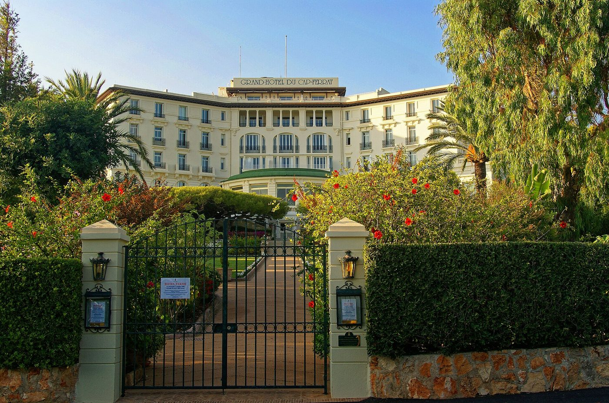

Meilleurs hôtels 5 étoiles en France 2026 : le palmarès LMHS
La France compte 33 palaces depuis le 2 juin 2026, six nouveaux entrants et, pour la
première fois depuis la création du label, quatre rétrogradations. Hors Paris, voici les dix
maisons qui comptent, avec le défaut de chacune.
Par Lucas Lecoq, rédacteur en chef✺Publié le 29 juillet 2026✺18 min de lecture
L'Hôtel du Cap-Eden-Roc, au bout du cap d'Antibes : premier de ce classement avec 9,2/10. Photo John Jason Junior, CC BY-SA 3.0.
TL;DR : l'essentielLe podium hors Paris
Hôtel du Cap-Eden-Roc, Antibes, 9,2/10 :
le palace côtier dans sa forme la plus aboutie, Indice Palace 5/5.
La Réserve Ramatuelle, 9,0/10 :
La Voile, deux étoiles Michelin, et des villas privées au-dessus de Pampelonne.
Cheval Blanc Courchevel, 8,9/10 :
l'alpin sans rival, avec Le 1947 et ses trois étoiles.
Les dix sont des palaces. Cette sélection ne retient que des
établissements distingués Palace par Atout France dans la collection 2026. Paris, qui
concentre 13 des 33 titulaires, fait l'objet d'un article distinct.
La France compte 33 palaces officiels en 2026, selon la collection dévoilée
par Atout France le 2 juin 2026 : 27 renouvellements, 6 nouveaux entrants et
4 rétrogradations, les premières depuis la création du label en 2010. Hors
Paris, qui mérite un article dédié, nous avons classé les dix établissements qui couvrent la
Côte d'Azur, les Alpes, la Provence, Bordeaux, la Champagne et les Landes. Notre top 3 :
l'Hôtel du Cap-Eden-Roc pour son prestige intemporel, La Réserve Ramatuelle pour son
expérience gastronomique deux étoiles, et Cheval Blanc Courchevel pour l'excellence alpine.
Notre méthode et l'Indice Palace
Ce classement applique la grille LMHS Destination, notée sur 10, celle de
nos palmarès par région : rapport qualité-prix, critère thématique, localisation, service, avis
vérifiés. Le critère thématique retenu ici est l'expérience palace. Il est
doublé d'un indicateur propriétaire, l'Indice Palace sur 5, qui mesure le
protocole de service, la discrétion, la personnalisation et le prestige du lieu.
Ne convertissez pas nos notes, et voici pourquoi. Sept de ces
dix maisons figurent déjà dans notre
palmarès des 50 meilleurs hôtels et
spas de France, avec une note sur 20 issue du Protocole LMHS. Les deux classements
divergent, et c'est normal : le palmarès national pondère fortement le spa et les
soins reçus, ce qui hisse Les Sources de Caudalie à 18,5/20 pour sa vinothérapie,
quand cette page mesure l'expérience palace, où le même établissement arrive
cinquième. Deux instruments, deux objets, deux échelles non convertibles. Le détail figure sur
notre page méthode.
Le tableau : 10 maisons, scores et tarifs
Rang
Établissement
Région
Score LMHS
Indice Palace
Palace
Nuit dès
Palmarès national
01
Hôtel du Cap-Eden-Roc
Côte d'Azur
9,2/10
5/5
Oui
1 100 €
16,3/20
02
La Réserve Ramatuelle
Côte d'Azur
9,0/10
5/5
Oui
1 100 €
17,4/20
03
Cheval Blanc Courchevel
Alpes
8,9/10
5/5
Oui
1 100 €
15,4/20
04
Grand-Hôtel du Cap-Ferrat
Côte d'Azur
8,7/10
4,5/5
Oui
950 €
15,8/20
05
Les Sources de Caudalie
Bordeaux
8,5/10
4/5
Oui
380 €
18,5/20
06
Royal Champagne Hôtel & Spa
Champagne
8,4/10
4,5/5
Oui, 2026
843 €
non classé
07
Airelles Gordes La Bastide
Provence
8,3/10
4,5/5
Oui
790 €
17,6/20
08
Hôtel Martinez Cannes
Côte d'Azur
8,2/10
4/5
Oui, 2026
163 €
non classé
09
Four Seasons Resort Megève
Alpes
8,1/10
4,5/5
Oui, 2026
900 €
16,2/20
10
Les Prés d'Eugénie
Landes
8,0/10
4/5
Oui
296 €
non classé
Lecture des tarifs : prix d'appel pour une chambre double en
basse saison. Les sept établissements déjà classés reprennent les tarifs publiés dans notre
palmarès national, relevés en juillet 2026 : un même hôtel ne peut pas afficher deux prix sur
le même site. Les trois autres, non encore classés, sont donnés sous réserve.
Le tarif du Martinez, 163 €, détonne pour un palace de la Croisette : c'est un
plancher de très basse saison, à confirmer avant de s'y fier. En juillet, en août et pendant le
Festival, comptez plusieurs fois ce montant.
Les 10 maisons, du meilleur au dernier
01
Hôtel du Cap-Eden-Roc 9,2/10
Antibes, Alpes-Maritimes, à la pointe du cap. Palace Atout France ·
Indice Palace 5/5 · Nuit dès 1 100 €.
L'Hôtel du Cap-Eden-Roc incarne le palace côtier dans sa forme la plus aboutie. Perché
sur le cap d'Antibes, il offre une vue méditerranéenne sans égale et un service d'une
discrétion absolue. Le Dior Spa Eden-Roc propose des soins sur mesure
inspirés de la nature méditerranéenne.
La table :Louroc, une étoile au Guide Michelin 2026,
sous la direction du chef Sébastien Broda, qui travaille les maraîchers de
la région et la petite pêche.
Le bémol LMHS : les tarifs de haute saison sont parmi les plus élevés
d'Europe, la maison ferme une partie de l'année, et l'accès à la mer se fait par une plate
forme rocheuse plutôt que par une plage de sable.
Alpes-Maritimes · Palace Atout France · Dior Spa Eden-Roc · Louroc, 1 étoile Michelin 2026 · Chef Sébastien Broda · Piscine d'eau de mer chauffée · Ouverture saisonnière · Indice Palace 5/5 · Nuit dès 1 100 €
02
La Réserve Ramatuelle 9,0/10
Ramatuelle, Var, au-dessus de la baie de Pampelonne. Palace Atout
France · Indice Palace 5/5 · Nuit dès 1 100 €.
La Réserve Ramatuelle conjugue luxe balnéaire et excellence gastronomique. Chambres et
villas dominent la baie ; le Spa Nescens déroule des programmes de
prévention santé plutôt que de simples soins, avec piscine intérieure et hammam.
La table :La Voile, deux étoiles au Guide
Michelin 2026, sous la direction du chef Éric Canino, formé
auprès de Michel Guérard, dont la cuisine met les légumes et le poisson au centre.
Le bémol LMHS : la maison est à flanc de colline, tout se fait en
navette ou en voiture, et l'affluence de Pampelonne en août contredit la promesse
d'isolement. Les villas privées se réservent une saison à l'avance.
Var · Palace Atout France · Spa Nescens · La Voile, 2 étoiles Michelin 2026 · Chef Éric Canino · Villas avec piscine privée · Indice Palace 5/5 · Nuit dès 1 100 €
03
Cheval Blanc Courchevel 8,9/10
Courchevel 1850, Savoie, skis aux pieds. Palace Atout France ·
Indice Palace 5/5 · Nuit dès 1 100 €.
Cheval Blanc Courchevel est le palace alpin par excellence : accès direct aux pistes,
vue sur les massifs, et un spa Guerlain avec piscine, sauna, hammam et
banya. La maison est la première de la collection Cheval Blanc, ouverte par LVMH avant
Saint-Barth, Saint-Tropez, Randheli et Paris.
La table :Le 1947 à Cheval Blanc, trois
étoiles au Guide Michelin 2026, du chef Yannick Alléno. C'est
l'une des rares tables trois étoiles d'altitude en France.
Le bémol LMHS : la saison est courte et l'établissement vit au rythme
de l'hiver, ce qui exclut toute escapade au printemps ou en automne. À Courchevel 1850, la
concurrence des palaces est telle que le rapport prix-exclusivité s'y juge sévèrement.
Savoie · Palace Atout France · Première maison Cheval Blanc · Spa Guerlain, banya · Le 1947, 3 étoiles Michelin 2026 · Chef Yannick Alléno · Ski aux pieds · Indice Palace 5/5 · Nuit dès 1 100 €
04

Grand-Hôtel du Cap-Ferrat, Four Seasons 8,7/10
Saint-Jean-Cap-Ferrat, Alpes-Maritimes, sur la pointe du cap. Palace
Atout France · Indice Palace 4,5/5 · Nuit dès 950 €.
Institution de la Côte d'Azur ouverte en 1908, le Grand-Hôtel domine la Méditerranée
depuis un parc de sept hectares, avec funiculaire jusqu'au Club Dauphin et sa piscine
d'eau de mer taillée dans le rocher. Le spa Four Seasons complète l'ensemble.
La table :Le Cap, une étoile au Guide Michelin 2026,
sous la direction du chef Yoric Tièche, d'inspiration méditerranéenne.
Le bémol LMHS : l'établissement ferme l'hiver, la clientèle y est très
internationale et les prestations de plage se paient à part. La descente au Club Dauphin
est spectaculaire, mais elle impose son rythme.
Alpes-Maritimes · Palace Atout France · Ouvert en 1908 · Parc de 7 hectares · Club Dauphin et piscine d'eau de mer · Le Cap, 1 étoile Michelin 2026 · Chef Yoric Tièche · Indice Palace 4,5/5 · Nuit dès 950 €
05
Les Sources de Caudalie 8,5/10
Martillac, Gironde, au cœur du vignoble de Pessac-Léognan. Palace
Atout France · Indice Palace 4/5 · Nuit dès 380 €.
Le palace viticole français de référence. Le Spa Vinothérapie Caudalie,
installé sur les terres du Château Smith Haut Lafitte, a inventé la catégorie : barrique de
bain, gommage aux pépins de raisin, piscine intérieure. C'est aussi la maison la plus
accessible du classement.
La table :La Grand'Vigne, deux étoiles au
Guide Michelin 2026, du chef Nicolas Masse, qui travaille caviar
d'Aquitaine, agneau des Pyrénées et vins de Pessac-Léognan.
Le bémol LMHS : ce n'est pas un palace de front de mer ni de montagne,
et le protocole y est plus détendu qu'à Antibes ou à Courchevel, ce qui lui coûte sur
l'Indice Palace. Bordeaux centre est à une vingtaine de kilomètres.
Gironde · Palace Atout France · Spa Vinothérapie Caudalie · Château Smith Haut Lafitte · La Grand'Vigne, 2 étoiles Michelin 2026 · Chef Nicolas Masse · 18,5/20 à notre palmarès national · Indice Palace 4/5 · Nuit dès 380 €
06
Royal Champagne Hôtel & Spa 8,4/10
Champillon, Marne, entre Reims et Épernay. Palace Atout France
depuis 2026 · Indice Palace 4,5/5 · Nuit dès 843 €.
Le palace champenois, tout juste promu. Ancien relais de poste devenu amphithéâtre de
pierre claire épousant le coteau, il regarde les vignes de la Champagne depuis chaque
chambre. Le spa de 1 500 m² décline soins à la vigne, piscines intérieure et extérieure.
La table :Le Royal, une étoile au Guide Michelin,
cuisine de saison adossée à une carte des champagnes qui justifie à elle seule le
détour.
Le bémol LMHS : la maison est jeune dans le club et sa notoriété reste
régionale ; l'architecture contemporaine, très réussie de l'intérieur, déroute vue de la
route. Sans voiture, on ne fait rien.
Marne · Palace Atout France, promu en 2026 · Vue sur les vignes de Champagne · Spa de 1 500 m² · Le Royal, 1 étoile Michelin · Ouvert toute l'année · Indice Palace 4,5/5 · Nuit dès 843 €
07
Airelles Gordes, La Bastide 8,3/10
Gordes, Vaucluse, sur le village perché. Palace Atout France ·
Indice Palace 4,5/5 · Nuit dès 790 €.
Le palace provençal de référence. La bastide domine la vallée du Luberon depuis le
village le plus photographié de Provence. Le spa Sisley ouvre sur la même
vue, avec piscines intérieure et extérieure.
La table joue la cuisine méditerranéenne dans un décor de pierre sèche et de mobilier
chiné, sans chercher l'étoile : c'est un parti pris.
Le bémol LMHS : Gordes en juillet est une destination de car de
tourisme, et l'accès au village se fait par une route étroite et pentue. La maison n'a pas
de table étoilée, ce qui pèse face aux autres palaces de ce classement.
Vaucluse · Palace Atout France · Village perché de Gordes · Spa Sisley, vue Luberon · Piscines intérieure et extérieure · 17,6/20 à notre palmarès national · Indice Palace 4,5/5 · Nuit dès 790 €
08
Hôtel Martinez, Cannes 8,2/10
Cannes, Alpes-Maritimes, sur la Croisette. Palace Atout France
depuis 2026 · Indice Palace 4/5 · Nuit dès 163 €.
Le paquebot Art déco de la Croisette, promu palace en 2026 après une rénovation de fond.
Plage privée en face, ponton, et le spa L'Oasis du Martinez avec piscine
et salle de sport.
La table :La Palme d'Or, une étoile au Guide Michelin
2026, désormais sous la direction du chef Jean Imbert, dans un décor qui
rend hommage au cinéma.
Le bémol LMHS : c'est l'adresse la plus urbaine du classement, sur un
boulevard passant, et son tarif varie du simple au décuple selon la saison. Pendant le
Festival, l'hôtel appartient au cinéma, pas à ses clients. La Palme d'Or est à une étoile
après en avoir longtemps porté deux.
Alpes-Maritimes · Palace Atout France, promu en 2026 · Architecture Art déco · Plage privée sur la Croisette · Spa L'Oasis du Martinez · La Palme d'Or, 1 étoile Michelin 2026 · Chef Jean Imbert · Indice Palace 4/5 · Nuit dès 163 €
09
Four Seasons Resort Megève 8,1/10
Megève, Haute-Savoie, au Mont d'Arbois. Palace Atout France
depuis 2026 · Indice Palace 4,5/5 · Nuit dès 900 €.
Le nouveau palace alpin, promu en 2026. Posé sur le domaine du Mont d'Arbois, ancien
fief des Rothschild, il joue le calme absolu et la vue sur le Mont Blanc plutôt que
l'animation du village. Spa Four Seasons avec piscine, sauna et hammam ; le restaurant
Kaito apporte une note nikkei rare en montagne.
Le bémol LMHS : à 1 300 mètres, la neige n'est plus garantie en début et
en fin de saison, et l'éloignement du centre de Megève oblige à la navette pour tout. Le
resort n'a pas de table étoilée, à la différence de ses concurrents savoyards.
Haute-Savoie · Palace Atout France, promu en 2026 · Domaine du Mont d'Arbois · Spa Four Seasons · Restaurants Kaito et Brasserie · Saisons hiver et été · 16,2/20 à notre palmarès national · Indice Palace 4,5/5 · Nuit dès 900 €
10
Les Prés d'Eugénie, Michel Guérard 8,0/10
Eugénie-les-Bains, Landes. Palace Atout France · Indice Palace 4/5 ·
Nuit dès 296 €.
Le palace thermal et gastronomique français, unique en son genre. C'est ici qu'est née
la cuisine minceur, dans les années 1970, et la maison n'a jamais cessé de
conjuguer table et thermalisme : sources thermales, spa, et une atmosphère de maison de
famille plutôt que d'hôtel international.
La table :Les Prés d'Eugénie tient trois
étoiles au Guide Michelin sans interruption depuis 1977, une longévité
exceptionnelle dans l'histoire du guide.
Le bémol LMHS : les Landes ne sont sur la route de personne, la
clientèle est très majoritairement française, et le style de la maison, très marqué années
1980 par endroits, ne conviendra pas à qui cherche le luxe contemporain.
Landes · Palace Atout France · Berceau de la cuisine minceur · Thermalisme et spa · 3 étoiles Michelin sans interruption depuis 1977 · Tarif le plus accessible du classement · Indice Palace 4/5 · Nuit dès 296 €
Les 6 nouveaux palaces 2026
La promotion de six établissements marque une évolution du label. Trois sont parisiens :
Bvlgari Hotel Paris, Cheval Blanc Paris et
Fouquet's Paris. Trois sont régionaux : le
Royal Champagne Hôtel & Spa à Champillon, l'
Hôtel Martinez à Cannes et le
Four Seasons Resort Megève. La Champagne entre pour la
première fois dans la carte des palaces.
Le mouvement inverse est inédit : quatre établissements ont perdu la
distinction, une première depuis la création du label en 2010. Le
Park Hyatt Paris-Vendôme, le Mandarin Oriental Paris,
l'Hôtel du Palais à Biarritz et le Byblos à Saint-Tropez
restent classés 5 étoiles mais ne sont plus palaces. Les motifs tiennent au défaut de
rénovation et à des insuffisances relevées sur certains espaces, dont le spa dans le cas de
Biarritz. Le label n'est donc plus un acquis : il se perd.
Ce que le label Palace garantit vraiment
Le label Palace n'est pas un sixième étoile. C'est une distinction d'État attribuée par
Atout France sur dossier et sur visite, selon des critères de situation, d'histoire, de
service, de personnalisation, de gastronomie, de bien-être et de rayonnement international.
Pour candidater, un établissement doit justifier de vingt-quatre mois d'activité, ou douze
après une rénovation totale, d'un classement 5 étoiles et de chambres d'au moins 26 m².
Ce que le label garantit : un protocole de service, une discrétion, une personnalisation du
séjour. Ce qu'il ne garantit pas : le meilleur rapport qualité-prix, ni une expérience
homogène d'une saison à l'autre. Plusieurs 5 étoiles non distingués offrent une nuit plus
convaincante que certains palaces, et les quatre rétrogradations de 2026 le confirment. C'est
précisément l'objet de notre Score LMHS et de notre Indice Palace : dépasser le label pour
mesurer l'expérience réelle.
Quelle maison pour quel séjour
Prestige intemporel : l'Hôtel du Cap-Eden-Roc,
inégalé hors Paris sur l'Indice Palace.
Quelle est la différence entre un hôtel 5 étoiles et un palace en France ?
Un palace est un hôtel 5 étoiles qui a obtenu une distinction d'État d'Atout France selon
des critères très exigeants : situation exceptionnelle, histoire, service impeccable,
personnalisation, excellence gastronomique, bien-être et rayonnement international. Tous les
palaces sont 5 étoiles, mais tous les 5 étoiles ne sont pas palaces : la France compte des
milliers d'hôtels 5 étoiles pour seulement 33 palaces.
Combien de palaces compte la France en 2026 ?
La France compte 33 palaces officiels en 2026, selon l'annonce d'Atout France du 2 juin
2026. La collection comprend 27 renouvellements et 6 nouveaux entrants. Paris en concentre 13,
les Alpes 7, la Côte d'Azur et le Sud-Est 9, le Sud-Ouest 2, l'Est 1 et l'Outre-mer 1.
Quel est le meilleur palace hors Paris en France ?
Selon notre grille LMHS Destination, l'Hôtel du Cap-Eden-Roc à Antibes est le meilleur
palace hors Paris avec 9,2/10 et un Indice Palace de 5/5. La Réserve Ramatuelle suit avec
9,0/10, devant Cheval Blanc Courchevel à 8,9/10. Attention, notre palmarès national des 50
meilleurs hôtels et spas de France les classe autrement : il pondère fortement le spa et les
soins reçus, quand cette page mesure l'expérience palace.
Quels sont les 6 nouveaux palaces 2026 ?
Bvlgari Hotel Paris, Cheval Blanc Paris et Fouquet's Paris pour la capitale ; Four Seasons
Resort Megève, Hôtel Martinez à Cannes et Royal Champagne Hôtel & Spa à Champillon pour
les régions. Trois parisiens, trois régionaux, et une première entrée de la Champagne dans la
carte des palaces.
Quel est le meilleur rapport qualité-prix parmi les palaces hors Paris ?
Les Prés d'Eugénie, dès 296 € la nuit, et Les Sources de Caudalie, dès 380 €, sont les
deux seuls palaces de ce classement sous 400 €, avec respectivement trois et deux étoiles au
Guide Michelin. L'Hôtel Martinez affiche un plancher plus bas encore, 163 €, mais c'est un
tarif de très basse saison qui n'a rien à voir avec ses prix d'été.
Quels palaces ont perdu leur label en 2026 ?
Quatre établissements ont été rétrogradés, une première depuis la création du label en
2010 : Park Hyatt Paris-Vendôme, Mandarin Oriental Paris, Hôtel du Palais à Biarritz et Byblos
à Saint-Tropez. Ils conservent leur classement 5 étoiles mais perdent la distinction Palace.
Notre méthode, les grilles de notation et les règles d'indépendance
Lucas Lecoq
Rédacteur en chef, Meilleurs.
Publié le 29 juillet 2026
Dernière mise à jour : 29 juillet 2026
» referme le bloc : toute la fin se serait
affichée en clair sur la page et aurait été indexée. Réécrit en un seul commentaire.
À ARBITRER PAR LA RÉDACTION :
- Photos disponibles pour six fiches sur dix. Manquent Cheval Blanc Courchevel, Royal Champagne,
Four Seasons Megève et Les Prés d'Eugénie : aucune image libre ne montrait l'établissement, et le
seul cliché Commons du Royal Champagne date du chantier de construction.
- Les tarifs du Royal Champagne (843 €), du Martinez (163 €) et des Prés d'Eugénie (296 €) viennent
du brief et ne sont pas recoupés : ces trois maisons ne figurent pas encore au palmarès national.
- Le brief prévoyait un lien vers un futur article « meilleurs hôtels 5 étoiles Paris ». Il n'existe
pas : à câbler le jour de sa publication, le pendant parisien actuel étant l'article sur les
hôtels de luxe à Paris.
-->